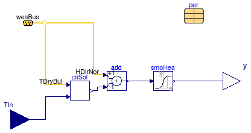

Package for solar thermal collector controllers
This package contains a controller for solar thermal collectors.
Extends from Modelica.Icons.Package (Icon for standard packages).
| Name | Description |
|---|---|
| SolarPumpController | Controller which activates a circulation pump when solar radiation is above a critical level |
| Examples for solar thermal collector controller models | |
| Package of BaseClass models used to create the models in the Controls package |
 Buildings.Fluid.SolarCollectors.Controls.SolarPumpController
Buildings.Fluid.SolarCollectors.Controls.SolarPumpController
Controller which activates a circulation pump when solar radiation is above a critical level

This component models a pump controller which might be used in a solar thermal system. It controls whether the pump is active or inactive based on the incident solar radiation and the system parameters. The pump is activated when the incident solar radiation is greater than the critical radiation.
The critical radiation is defined per Equation 6.8.2 in Duffie and Beckman (2006). It is
GTC=(FRUL (TIn-TEnv))/(FR(τα))
where GTC is the critical solar radiation, FRUL is the heat loss coefficient, TIn is the inlet temperature, TEnv is the ambient temperature, and FR(τα) is the maximum efficiency.
J.A. Duffie and W.A. Beckman 2006, Solar Engineering of Thermal Processes (3rd Edition),
John Wiley & Sons, Inc.
Extends from Modelica.Blocks.Icons.Block (Basic graphical layout of input/output block).
| Type | Name | Default | Description |
|---|---|---|---|
| Real | delY | 0.01 | Width of the smoothHeaviside function [W/m2] |
| GenericSolarCollector | per | Performance data |
| Type | Name | Description |
|---|---|---|
| input RealInput | TIn | Fluid temperature entering the collector [K] |
| output RealOutput | y | On/off control signal for the pump [1] |
| Bus | weaBus | Weather data input |